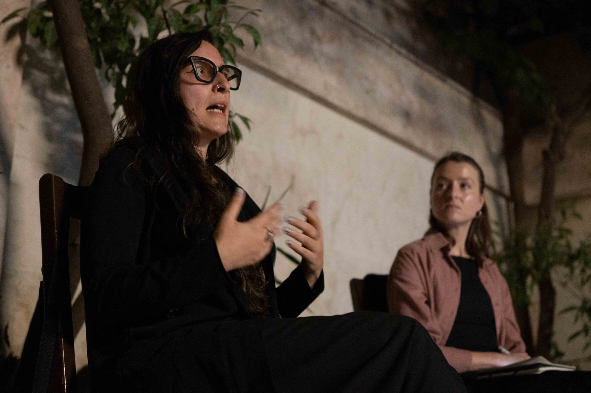

Commentary
Our work
Syria Civic develops new policy ideas, creates spaces for public debate, and helps people organize projects of their own—so more Syrians can shape the decisions that affect them.
Parliament & Policy
We develop policy proposals, support lawmakers with independent research, and report on Parliament’s decisions and debates. Through briefings, interviews, and public discussions, we put new possibilities on its agenda.
Explore Parliament & Policy
Parliamentary chamber, 1955 · AMASyria / Wikimedia Commons · Public domain
Parliamentary Record
We collect and publish parliamentary transcripts so they remain accessible to everyone.
Browse the transcripts

Be part of a growing community bringing new ideas and initiatives to life in Syria.
DonateCivic Futures
We connect students in Syria and abroad, support emerging civic leaders, and help people turn ideas into projects.